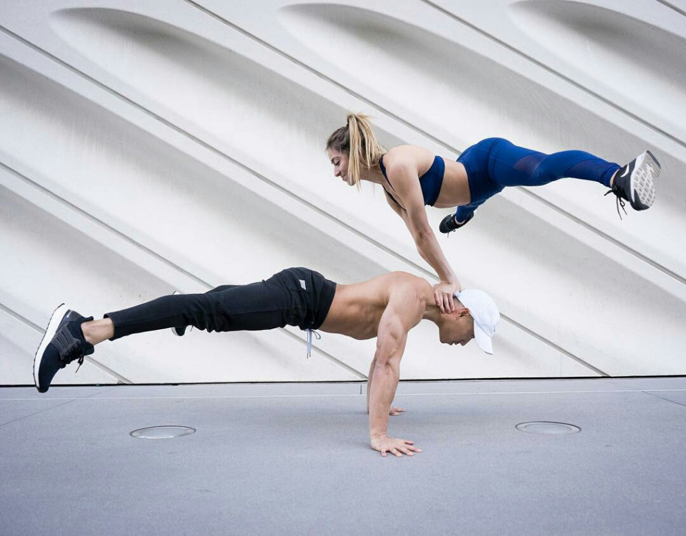
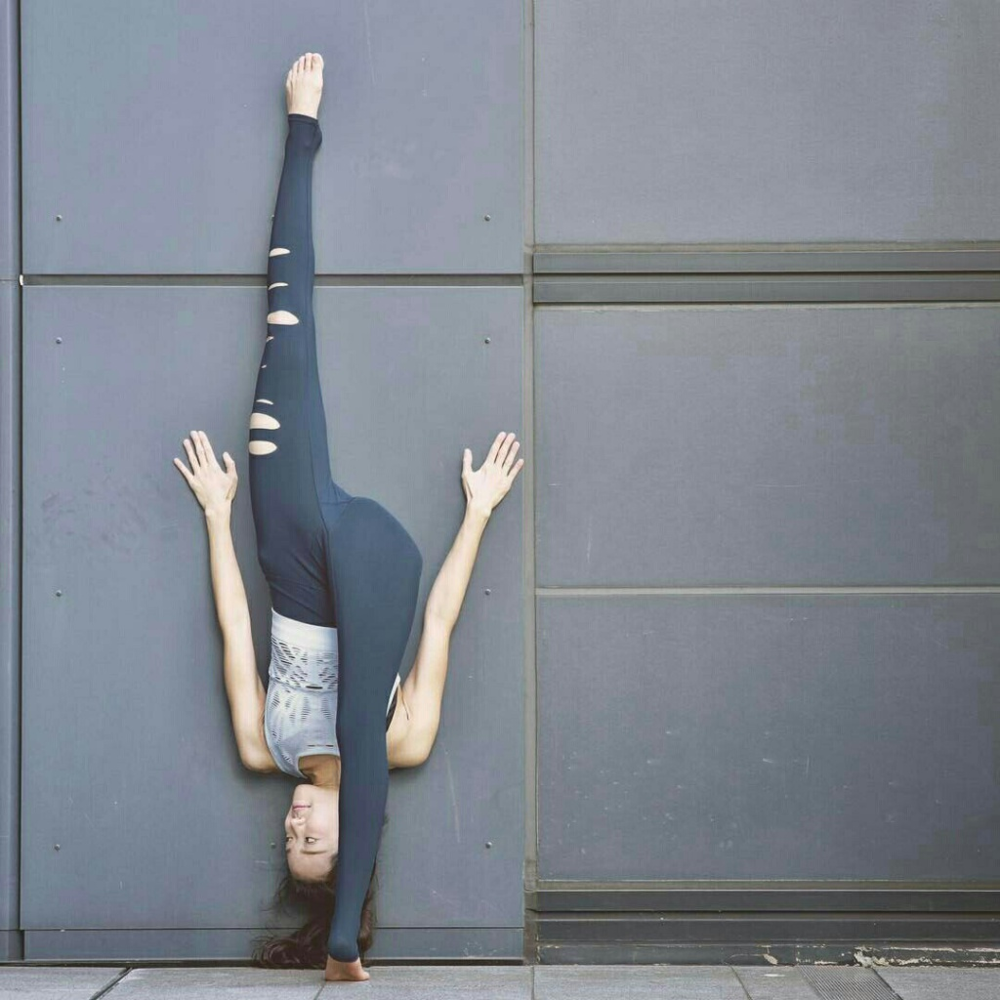
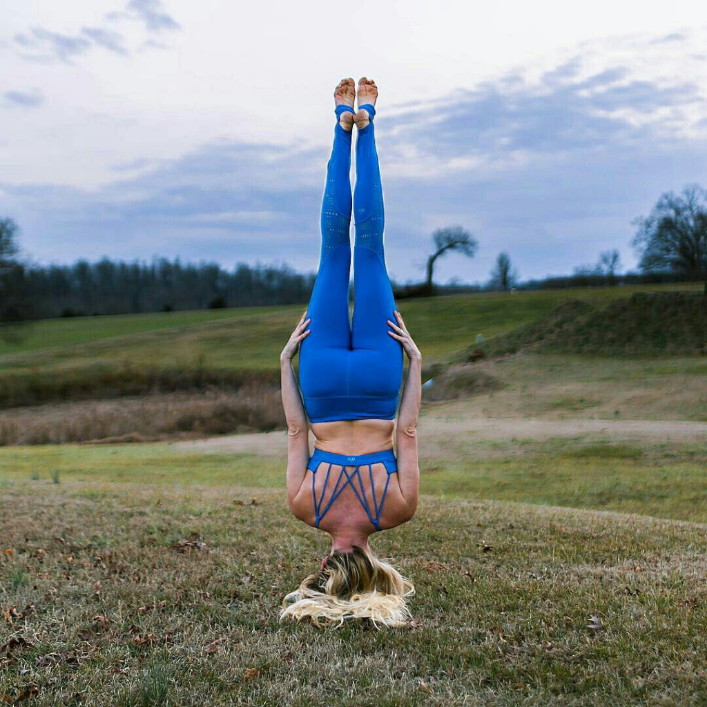
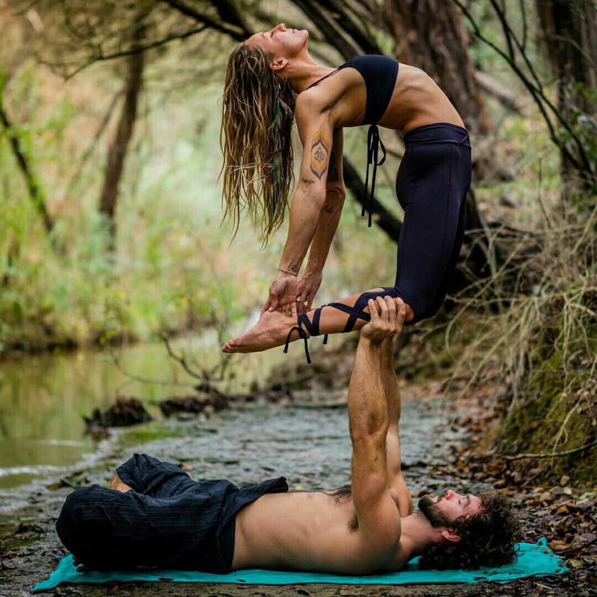
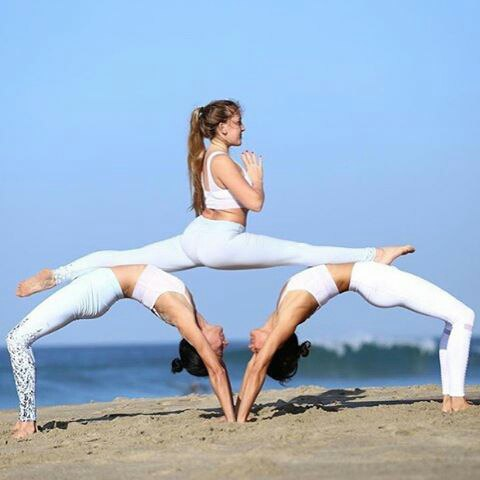
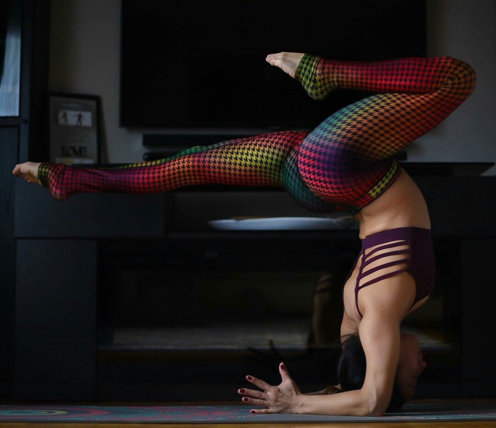
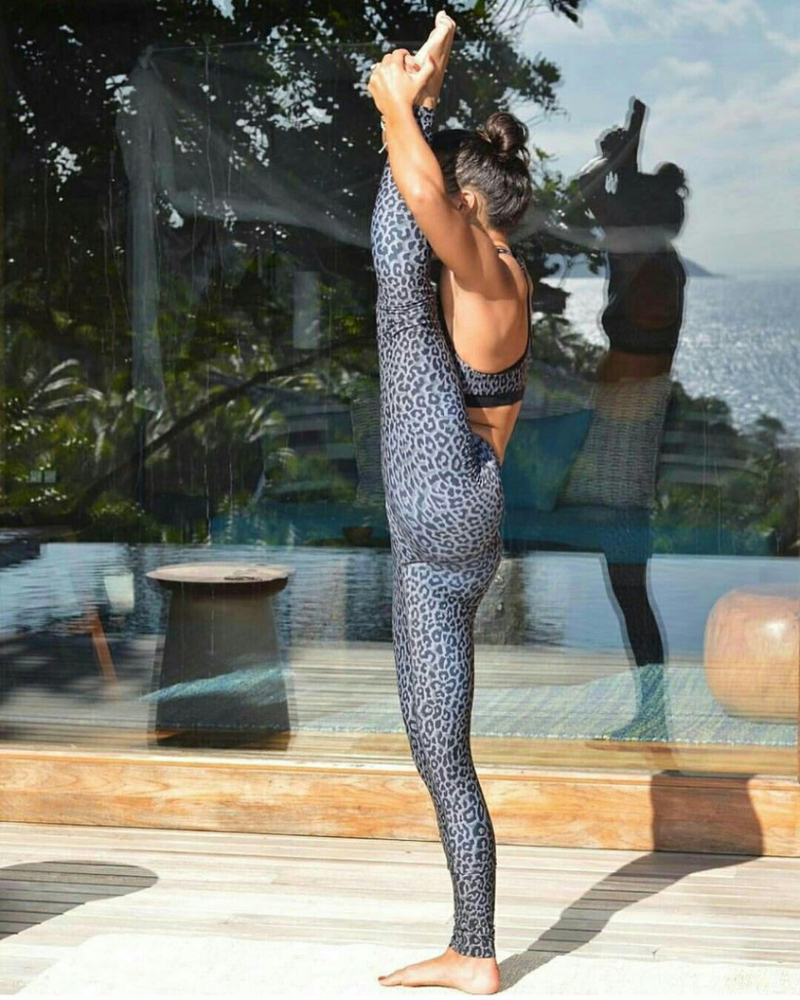
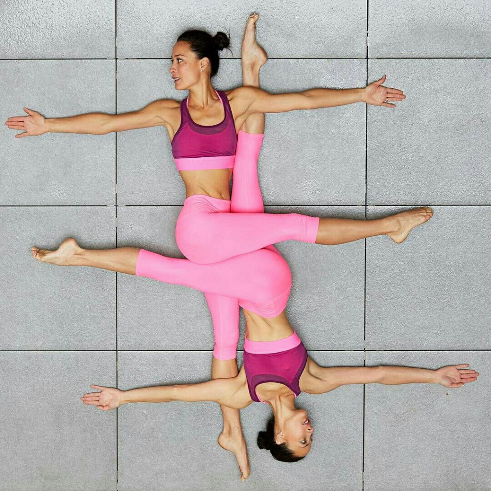

Джона Кест. Зараз Джона дає потужну віньясу у Лос-Анджелесі і веде
нереальний інстаграм з Каліфорнії з любов'ю.
Патрік Біч.Проникливий погляд голубих очей, легкість з якою він виконує асани,
бездоганне тіло - ось причини чоб відвідати його
інстаграм.
Ділан Вернер. Складається враження, що закони гравітації та фізіології не поширюються на цього
гнучкого силача.
Шон Фелпс.Розглядаючи фото, на яких Шон
виконує надскладні пози, тяжко повірити в те, що свої заняття він розпочав за місяць до 30-го
дня народження.
Дункан Пік.Найвідоміший йогін з Австралії, мандрує світом,
викладаючи йогу та надихаючи людей.
Марк Роббердс. Активно практикує, регулярно відвідує Індію, вивчає філософію йоги.
Приємно усвідомлювати, що у нас є дещо спільне з нашими кумирами - вони також люблять йогу.
І перш ніж відправитись до студії звукозапису працювати над нашими улюбленими композиціями
вони спочатку відвідують студію йоги.
Аланис Мориссетт. Аланис віддана своїй практиці останні десять років.
Тревор Холл. Скоріш за все, він вже є у вашому плейлист, проте він не тільки
створює музику для йоги для йоги, але й сам нею займається.
Ванесса Хадженс.Можливо саме повне йогівське дихання зберігає її голосові зв'язки у
відмонному стані.
Мобі.Нещодавно Мобі випустив 4 години музики для йоги, тому не дивно,
що він і сам нею займається.
       